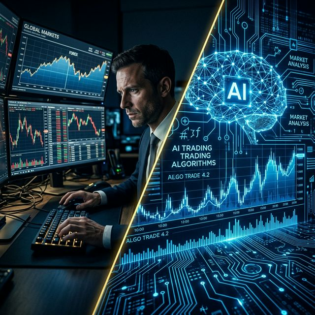

Algorithm vs. Gut Feeling: Who Handles Risk Better in 2026?
A silent partner that never sleeps is reshaping how traders navigate volatility — and it didn't go to school for intuition.

Two approaches to risk — one runs on experience, the other on billions of data points processed per second.
Imagine standing at the edge of a trading floor, the hum of screens and the pulse of global markets racing through your veins. Now picture a silent partner that never sleeps, crunching billions of data points in the blink of an eye, turning uncertainty into calculated confidence. That partner is the algorithm, and by 2026 it has fundamentally outpaced human intuition in risk management, reshaping the way traders navigate volatility and complexity. 🚀
The Algorithm's Core Superpower: Data at Scale
The defining strength of algorithmic systems lies in their ability to ingest and analyse vast streams of data far beyond the reach of any individual trader. A seasoned human can process a handful of market signals at once; a well-tuned algorithm can monitor thousands of instruments, news feeds, order books, and macro indicators simultaneously — in real time, at microsecond latency.
With sophisticated statistical models and machine learning techniques, algorithms can identify patterns, correlations, and emerging trends before they materialise in price action. This rapid data processing means that market risk — often driven by sudden shifts in liquidity or sentiment — can be mitigated before it crystallises into a loss. Technical risks such as system outages or latency spikes are equally addressed through automated monitoring that flags anomalies and triggers fail‑over protocols before any human could respond. 📈🔍
The Bias Problem: Why Gut Feeling Fails Under Pressure
Human traders, no matter how experienced, are fundamentally wired in ways that work against them in fast-moving markets. Behavioural finance has catalogued dozens of cognitive biases that consistently undermine decision-making:
- Loss aversion: The pain of a loss feels roughly twice as powerful as the pleasure of an equivalent gain, leading traders to hold losing positions too long and cut winning ones too early.
- Recency bias: Recent events feel disproportionately predictive of the future, causing overreaction to short-term noise.
- Overconfidence: A string of wins inflates conviction, leading to position sizes larger than objective risk metrics would justify.
- Herding: The comfort of following the crowd causes traders to enter and exit positions at exactly the wrong moment — buying into peaks and panic-selling at troughs.
Algorithms are immune to all of the above. They operate on predefined rules and objective metrics, executing the same strategy on day one as on day one thousand, unaffected by yesterday's P&L, last night's news cycle, or the general mood on the floor. 🧠⚖️
What the Evidence Shows
Multiple academic studies and industry analyses comparing algorithmic and discretionary trading consistently reach the same conclusion: algorithm-driven portfolios outperform those guided by instinct, particularly in high-frequency and data-rich environments where milliseconds matter. Key findings include:
- Quantitative hedge funds have, on average, delivered more consistent risk-adjusted returns than their discretionary counterparts over the past decade.
- Algorithmic execution reduces market impact costs and slippage significantly compared to manual order placement.
- Machine learning models trained on alternative data (satellite imagery, credit card aggregates, social sentiment) consistently generate alpha that human analysts simply cannot identify in time.
This does not mean every algorithm wins — poor model design, overfitting, and tail-risk blindspots can cause algorithmic failures too. But the discipline of quantitative design itself — building explicit hypotheses, testing them rigorously, and defining clear risk limits — is a structural advantage over intuition-based approaches. 📊✅
The 2026 Landscape: AI Becomes the Norm
Looking at where the industry stands today, the integration of artificial intelligence into risk frameworks is no longer optional — it is becoming the regulatory and competitive baseline. Key developments driving this shift include:
- Regulatory pressure: Bodies like ESMA and the SEC are increasingly requiring firms to demonstrate model governance, explainability, and backtested stress-testing — frameworks that naturally favour algorithmic approaches.
- Real-time risk engines: Modern risk systems powered by large language models (LLMs) and reinforcement learning can dynamically adjust hedging ratios and position limits based on live market conditions, not end-of-day snapshots.
- Predictive analytics for alpha: Firms investing in AI-driven signal generation are identifying opportunities — cross-asset correlations, regime shifts, liquidity gaps — faster than any human research team.
Traders who embrace these tools will not only reduce exposure to unforeseen shocks but also unlock new opportunities for alpha generation. Those who cling exclusively to discretion risk being systematically disadvantaged. 🤖📉➡️📈
Does Human Judgment Still Have a Role?
Absolutely — but the nature of that role is evolving. In 2026, the best-performing risk desks are not fully autonomous black boxes; they are human-algorithm partnerships in which each party does what it does best:
- Algorithms handle: execution, data processing, pattern recognition, real-time hedging, and rule-based risk limits.
- Humans provide: strategic direction, ethical oversight, interpretation of unprecedented macro events outside historical training data, and final sign-off on major regime changes.
The COVID-19 pandemic illustrated this well. Many purely quantitative models struggled in March 2020 because market behaviour lay outside historical parameters — humans had to step in to override positions and reset assumptions. Yet for the subsequent 18 months of recovery, algorithmic systems dramatically outperformed discretionary desks in capturing the rebound. The lesson: algorithms excel at what they have seen before; humans must govern the boundaries of the unknown. 🤝💡
Conclusion: Embrace the Algorithm — But Stay in the Cockpit
The question is no longer algorithm or gut feeling — it is how do you optimally combine both? As the line between human insight and machine precision continues to blur, the traders and risk managers who thrive in 2026 will be those who:
- Understand the models they deploy well enough to know their limits.
- Use algorithms for scale, speed, and discipline — not as a substitute for strategic thinking.
- Continuously refine their risk frameworks as market regimes evolve.
Will you let a sophisticated algorithm steer your risk strategy, or cling to the old ways of intuition? The smarter answer, in 2026, is: yes to both — in the right measure. 🧭🏆